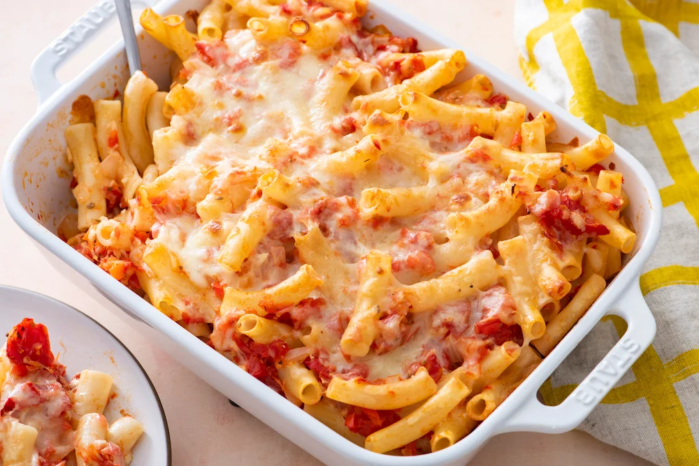

Baked Ziti

Cheesy Baked Ziti
This recipe is a meat-less option for baked ziti.
5 simple ingredients to make a delicious meal.
This will be able to feed a family of 5-8.
Ingredients
- 16 oz Mozzarella Cheese
- 08 oz Provolone Cheese
- 24 oz Pasta Sauce
- 16 oz Sour Cream
- 16 oz Penne Pasta
- 20x12"Aluminum Pan
Steps
- Set the oven to 450F
- Boil Pasta until Al Dente. Drain and save 1/4 cup of boiled water
- In aluminum pan mix pasta sauce, sour cream, pasta and boiled water
- With the mozzarella cheese cover the pasta
- With the provolone cheese cover the mozzarella cheese
- Bake in oven for 45min-1hr 30min or until cheese is browning
- Let it sit for 5-10min and serve
Now it is up to you whether you want to eat them now or place them in the freezer and reheat later for 2-3 minutes.
Home [Next] [Prev]